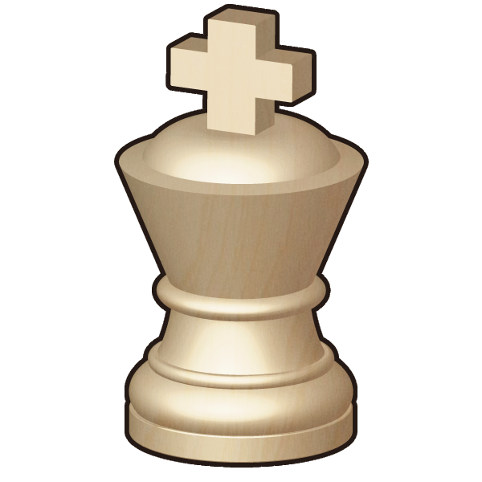
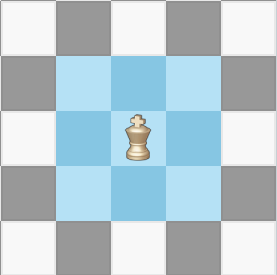
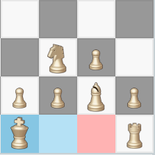
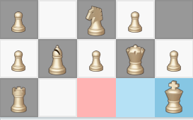

Kings may move to adjoining squares only, except in the case of castling.

Fig.1: King legal moves
is a special move that occurs between a player's king and one of the same player's rooks. A castling move may only be performed if both the king and the participating rook have not yet been moved during the current game. To perform the castling move the king is moved two squares horizontal towards the participating rook, and the rook is moved two squares horizontal towards the king. The king and the rook may pass through each other to accomplish this move.

Fig.2: First castling

Fig.3: Second castling
Kings are identified with the capital letter 'K'.